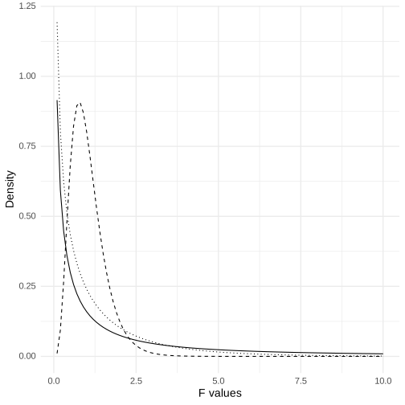

Chapter 15: Comparing means
Contents
Chapter 15: Comparing means#
library(tidyverse)
library(ggplot2)
library(tidyr)
library(fivethirtyeight)
library(BayesFactor)
library(lme4)
library(lmerTest)
library(cowplot)
library(knitr)
library(emmeans)
theme_set(theme_minimal(base_size = 14))
set.seed(123456) # set random seed to exactly replicate results
# load the NHANES data library
library(NHANES)
# drop duplicated IDs within the NHANES dataset
NHANES <-
NHANES %>%
dplyr::distinct(ID,.keep_all=TRUE)
NHANES_adult <-
NHANES %>%
subset(Age>=18) %>%
drop_na(BMI)
── Attaching packages ─────────────────────────────────────────────────────────────────────────────────────────────────────────────────────────────── tidyverse 1.3.2 ──
✔ ggplot2 3.4.1 ✔ purrr 1.0.1
✔ tibble 3.1.8 ✔ dplyr 1.1.0
✔ tidyr 1.3.0 ✔ stringr 1.5.0
✔ readr 2.1.4 ✔ forcats 1.0.0
── Conflicts ────────────────────────────────────────────────────────────────────────────────────────────────────────────────────────────────── tidyverse_conflicts() ──
✖ dplyr::filter() masks stats::filter()
✖ dplyr::lag() masks stats::lag()
Some larger datasets need to be installed separately, like senators and
house_district_forecast. To install these, we recommend you install the
fivethirtyeightdata package by running:
install.packages('fivethirtyeightdata', repos =
'https://fivethirtyeightdata.github.io/drat/', type = 'source')
Loading required package: coda
Loading required package: Matrix
Attaching package: ‘Matrix’
The following objects are masked from ‘package:tidyr’:
expand, pack, unpack
************
Welcome to BayesFactor 0.9.12-4.4. If you have questions, please contact Richard Morey (richarddmorey@gmail.com).
Type BFManual() to open the manual.
************
Attaching package: ‘lmerTest’
The following object is masked from ‘package:lme4’:
lmer
The following object is masked from ‘package:stats’:
step
Binomial test for a single proportion#
NHANES_sample <-
NHANES_adult %>%
drop_na(BPDiaAve) %>%
mutate(Hypertensive = BPDiaAve > 80) %>%
sample_n(200)
# compute sign test for differences between first and second measurement
npos <- sum(NHANES_sample$Hypertensive)
bt <- binom.test(npos, nrow(NHANES_sample), alternative='greater')
bt
Exact binomial test
data: npos and nrow(NHANES_sample)
number of successes = 38, number of trials = 200, p-value = 1
alternative hypothesis: true probability of success is greater than 0.5
95 percent confidence interval:
0.1455539 1.0000000
sample estimates:
probability of success
0.19
T-test output#
tt = t.test(x=NHANES_adult$BPDiaAve, mu=80, alternative='greater')
tt
One Sample t-test
data: NHANES_adult$BPDiaAve
t = -55.265, df = 4593, p-value = 1
alternative hypothesis: true mean is greater than 80
95 percent confidence interval:
69.1928 Inf
sample estimates:
mean of x
69.50522
Bayes factor output#
ttestBF(NHANES_sample$BPDiaAve, mu=80, nullInterval=c(-Inf, 80))
t is large; approximation invoked.
t is large; approximation invoked.
Bayes factor analysis
--------------
[1] Alt., r=0.707 -Inf<d<80 : 2.732736e+16 ±NA%
[2] Alt., r=0.707 !(-Inf<d<80) : NaNe-Inf ±NA%
Against denominator:
Null, mu = 80
---
Bayes factor type: BFoneSample, JZS
Figure 15.1#
# create sample with tv watching and marijuana use
NHANES_sample <-
NHANES_adult %>%
drop_na(TVHrsDay, RegularMarij) %>%
mutate(
TVHrsNum = recode( #recode character values into numerical values
TVHrsDay,
"More_4_hr" = 5,
"4_hr" = 4,
"2_hr" = 2,
"1_hr" = 1,
"3_hr" = 3,
"0_to_1_hr" = 0.5,
"0_hrs" = 0
)
) %>%
sample_n(200)
lm_summary <- summary(lm(TVHrsNum ~ RegularMarij, data = NHANES_sample))
p1 <- ggplot(NHANES_sample,aes(RegularMarij,TVHrsNum)) +
geom_violin(draw_quantiles=.50) +
labs(
x = "Regular marijuana user",
y = "TV hours per day"
)
p2 <- ggplot(NHANES_sample,aes(RegularMarij,TVHrsNum)) +
geom_violin() +
annotate('segment',x=1,y=lm_summary$coefficients[1,1],
xend=2,
yend=lm_summary$coefficients[1,1]+lm_summary$coefficients[2,1],
linetype='dotted') +
labs(
x = "Regular marijuana user",
y = "TV hours per day"
)
plot_grid(p1, p2)
T-test result#
ttresult <- t.test(
TVHrsNum ~ RegularMarij,
data = NHANES_sample,
alternative = 'less'
)
ttresult
Welch Two Sample t-test
data: TVHrsNum by RegularMarij
t = -3.3465, df = 85.155, p-value = 0.0006098
alternative hypothesis: true difference in means between group No and group Yes is less than 0
95 percent confidence interval:
-Inf -0.3911949
sample estimates:
mean in group No mean in group Yes
2.006711 2.784314
Linear model summary#
# print summary of linear regression to perform t-test
lm_summary
Call:
lm(formula = TVHrsNum ~ RegularMarij, data = NHANES_sample)
Residuals:
Min 1Q Median 3Q Max
-2.28431 -1.00671 -0.00671 0.99329 2.99329
Coefficients:
Estimate Std. Error t value Pr(>|t|)
(Intercept) 2.0067 0.1162 17.27 < 2e-16 ***
RegularMarijYes 0.7776 0.2300 3.38 0.000872 ***
---
Signif. codes: 0 ‘***’ 0.001 ‘**’ 0.01 ‘*’ 0.05 ‘.’ 0.1 ‘ ’ 1
Residual standard error: 1.418 on 198 degrees of freedom
Multiple R-squared: 0.05456, Adjusted R-squared: 0.04978
F-statistic: 11.43 on 1 and 198 DF, p-value: 0.0008724
Bayes factor for mean differences#
# compute bayes factor for group comparison
# In this case, we want to specifically test against the null hypothesis that the difference is greater than zero - because the difference is computed by the function between the first group ('No') and the second group ('Yes'). Thus, we specify a "null interval" going from zero to infinity, which means that the alternative is less than zero.
bf <- ttestBF(
formula = TVHrsNum ~ RegularMarij,
data = NHANES_sample,
nullInterval = c(0, Inf)
)
bf
Warning message:
“data coerced from tibble to data frame”
Bayes factor analysis
--------------
[1] Alt., r=0.707 0<d<Inf : 0.04088491 ±0%
[2] Alt., r=0.707 !(0<d<Inf) : 61.42543 ±0%
Against denominator:
Null, mu1-mu2 = 0
---
Bayes factor type: BFindepSample, JZS
Figure 15.2#
set.seed(12345678)
NHANES_sample <-
NHANES %>%
dplyr::filter(Age>17 & !is.na(BPSys2) & !is.na(BPSys1)) %>%
dplyr::select(BPSys1,BPSys2,ID) %>%
sample_n(200)
NHANES_sample_tidy <-
NHANES_sample %>%
gather(timepoint,BPsys,-ID)
NHANES_sample <-
NHANES_sample %>%
mutate(
diff=BPSys1-BPSys2,
diffPos=as.integer(diff>0),
meanBP=(BPSys1+BPSys2)/2
)
p1 <- ggplot(NHANES_sample_tidy,aes(timepoint,BPsys)) +
geom_violin() +
scale_x_discrete(
labels = c("Time 1", "Time 2"),
)
p2 <- p1 +geom_line(aes(group=ID))
plot_grid(p1, p2)
T-test output#
t.test(
BPsys ~ timepoint,
data = NHANES_sample_tidy,
paired = FALSE,
var.equal = TRUE
)
Two Sample t-test
data: BPsys by timepoint
t = 0.64507, df = 398, p-value = 0.5193
alternative hypothesis: true difference in means between group BPSys1 and group BPSys2 is not equal to 0
95 percent confidence interval:
-2.088617 4.128617
sample estimates:
mean in group BPSys1 mean in group BPSys2
121.37 120.35
Figure 15.3#
ggplot(NHANES_sample,aes(diff)) +
geom_histogram(bins=30) +
geom_vline(xintercept = mean(NHANES_sample$diff),color='blue')
Sign test#
# compute sign test for differences between first and second measurement
npos <- sum(NHANES_sample$diffPos)
bt <- binom.test(npos, nrow(NHANES_sample))
bt
Exact binomial test
data: npos and nrow(NHANES_sample)
number of successes = 96, number of trials = 200, p-value = 0.6207
alternative hypothesis: true probability of success is not equal to 0.5
95 percent confidence interval:
0.4090140 0.5515876
sample estimates:
probability of success
0.48
Paired t-test#
# compute paired t-test
t.test(BPsys ~ timepoint, data = NHANES_sample_tidy, paired = TRUE)
Paired t-test
data: BPsys by timepoint
t = 2.7369, df = 199, p-value = 0.006763
alternative hypothesis: true mean difference is not equal to 0
95 percent confidence interval:
0.2850857 1.7549143
sample estimates:
mean difference
1.02
Bayes factor result#
# compute Bayes factor for paired t-test
ttestBF(x = NHANES_sample$BPSys1, y = NHANES_sample$BPSys2, paired = TRUE)
Bayes factor analysis
--------------
[1] Alt., r=0.707 : 2.966787 ±0.01%
Against denominator:
Null, mu = 0
---
Bayes factor type: BFoneSample, JZS
Figure 15.4#
set.seed(123456)
nPerGroup <- 36
noiseSD <- 10
meanSysBP <- 140
effectSize <- 0.8
df <- data.frame(
group=as.factor(c(rep('placebo',nPerGroup),
rep('drug1',nPerGroup),
rep('drug2',nPerGroup))),
sysBP=NA)
df$sysBP[df$group=='placebo'] <- rnorm(nPerGroup,mean=meanSysBP,sd=noiseSD)
df$sysBP[df$group=='drug1'] <- rnorm(nPerGroup,mean=meanSysBP-noiseSD*effectSize,sd=noiseSD)
df$sysBP[df$group=='drug2'] <- rnorm(nPerGroup,mean=meanSysBP,sd=noiseSD)
ggplot(df,aes(group,sysBP)) + geom_boxplot() + ylab('systolic blood pressure')
Figure 15.5#
fdata <-
data.frame(x=seq(0.1,10,.1)) %>%
mutate(
f_1_1=df(x,1,1),
f_1_50=df(x,1,50),
f_10_50=df(x,10,50)
)
ggplot(fdata,aes(x,f_1_1)) +
geom_line() +
geom_line(aes(x,f_1_50),linetype='dotted') +
geom_line(aes(x,f_10_50),linetype='dashed') +
labs(y = "Density", x = "F values")

ANOVA result#
# create dummy variables for drug1 and drug2
df <-
df %>%
mutate(
d1 = as.integer(group == "drug1"), # 1s for drug1, 0s for all other drugs
d2 = as.integer(group == "drug2") # 1s for drug2, 0s for all other drugs
)
# test model without separate duymmies
lmResultAnovaBasic <- lm(sysBP ~ group, data=df)
emm.result <- emmeans(lmResultAnovaBasic, "group" )
# pairs(emm.result)
# fit ANOVA model
lmResultANOVA <- lm(sysBP ~ d1 + d2, data = df)
summary(lmResultANOVA)
Call:
lm(formula = sysBP ~ d1 + d2, data = df)
Residuals:
Min 1Q Median 3Q Max
-29.0838 -7.7452 -0.0978 7.6872 23.4313
Coefficients:
Estimate Std. Error t value Pr(>|t|)
(Intercept) 141.595 1.656 85.502 < 2e-16 ***
d1 -10.237 2.342 -4.371 2.92e-05 ***
d2 -2.027 2.342 -0.865 0.389
---
Signif. codes: 0 ‘***’ 0.001 ‘**’ 0.01 ‘*’ 0.05 ‘.’ 0.1 ‘ ’ 1
Residual standard error: 9.936 on 105 degrees of freedom
Multiple R-squared: 0.1695, Adjusted R-squared: 0.1537
F-statistic: 10.71 on 2 and 105 DF, p-value: 5.83e-05